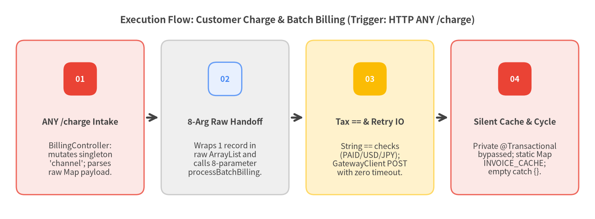
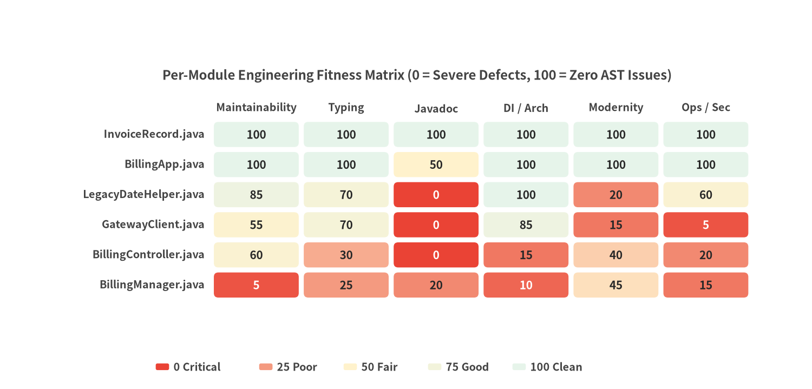

PNI Software Health Diagnostic Report: legacy-billing
Target Repository: examples/java/api_spring_messy (java_api_spring_messy)
Language & Stack: Java 1.8 (declared) / Spring Boot Web Starter (LATEST) / javax.servlet-api 4.0.1 / JUnit 4.13.2 / Maven

Audit Identification & Provenance
| Attribute | Value |
|---|---|
| Project Name | legacy-billing (com.example:legacy-billing:0.0.1-SNAPSHOT) |
| Target Root | examples/java/api_spring_messy |
| Primary Language | java (Maven, 6 production files / 187 LOC, 1 test file) |
| Workflow ID & Scope | java_api_spring_messy (category=audit, scope=repo) |
| Workflow Run ID | wf-8177454c |
| Evaluated At (UTC) | 2026-11-22T11:29:02.337544+00:00 |
| Git Provenance | main@d1e02277 (dirty) |
| Overall Score & Grade | 66 / 100 (Grade C) (Deterministic Baseline: 76, AI Qualitative Adjustment: -10) |
| Rule Compliance | 0 / 16 rules passed (15 FAIL, 1 WARN, 0 PASS) |
| Findings Summary | 19 total (7 deterministic, 12 AI qualitative) across 14 unique locations (6 CRITICAL, 8 HIGH, 4 MEDIUM, 1 LOW) |
| Downstream Linkage | Feeds directly into the java_api_spring_messy_migration Clean Architecture modernization plan |
Scope & Audit Notice: This report synthesizes deterministic AST parsing (
tree-sitter), project manifest inspection, containerized Maven/Docker build and runtime verification, Trivy filesystem SCA/IaC scanning, and dynamic HTTP penetration readiness checks executed under PNI501 Workflow v2. All credentials referenced from source analysis are redacted (<REDACTED_SECRET>).
1. Executive Summary
legacy-billing (examples/java/api_spring_messy) scores 66/100 (Grade C) with 0/16 rules passing (15 FAIL, 1 WARN), reflecting a -10pt qualitative deduction across all seven engineering dimensions relative to its deterministic AST baseline of 76/100. Live Docker verification, tree-sitter AST analysis, and Trivy SCA proved a single compounding causal chain: unpinned spring-boot-starter-web:LATEST in pom.xml simultaneously breaks Maven compilation on Java 1.8, triggers a CRITICAL static Spring4Shell range alert, and blocks both JaCoCo coverage and dynamic HTTP penetration testing.

Live AST × Docker × Trivy Causal Chain & Key Findings
The central operational insight of this audit is that build instability, unverified runtime behavior, and critical supply-chain exposure all originate from the same unpinned dependency and deprecated container baseline:
- Unpinned Manifest (
pom.xml):org.springframework.boot:spring-boot-starter-webspecifies<version>LATEST</version>alongside an end-of-life Java1.8compiler target (52.0bytecode) and no Maven Wrapper (mvnw). - Live Compiler Crash (
harness_build): During containerized build verification (java/maven.dockerfile,JAVA_VERSION=8), Maven resolvedspring-boot-4.2.0.jar(SpringApplication.class, bytecode61.0/ JDK 17+), aborting compilation immediately withclass file has wrong version 61.0, should be 52.0. Meanwhile, the projectDockerfilefailed in1.21sbecausedocker.io/library/openjdk:latestis no longer published on Docker Hub. - Compounding Verification Blindness & Static SCA Risk: Because neither the project image nor the Maven harness could compile, offline JUnit execution (
0/0tests), JaCoCo line coverage (N/A), Spring Boot startup smoke checks (blocked), and live HTTP penetration testing (web_pentest,0/0probes) were all blocked. Simultaneously, Trivy filesystem SCA evaluated the unpinnedLATESTspecifier against the full historical CVE range (is_unpinned_specifier=True), raising CRITICALCVE-2022-22965(Spring4Shell, CVSS 9.8). - Concentrated Source Hotspots: Inside the 187-LOC codebase, architectural and security debt concentrates in three classes—
BillingManager.java(circularBillingControllerdependency,cognitive=56, 8 parameters, staticINVOICE_CACHE,String ==bugs, emptycatch, broken private@Transactional),GatewayClient.java(hardcodedGATEWAY_SECRETredacted as<REDACTED_SECRET>, Java 11java.net.httpmismatch on Java 1.8 target, missing HTTP timeout), andBillingController.java(mutable singletonchannelrace condition, unauthenticated catch-allANY /charge).

Executive Scorecard Summary
| Verification Gate | Status | Key Observed Evidence |
|---|---|---|
| Overall Health Score | 66 / 100 (Grade C) | 7-axis scores: architecture=80, code_quality=86, typing=77, testing=51, dependencies=72, security=50, documentation=44 |
| Lowest-Scoring Audit Steps | 10 – 15 / 100 (Grade D) | container_runtime_audit=10 (D), supply_chain_audit=15 (D), java_test_audit=15 (D) |
Container Runtime (RV-01..04) |
failed |
build=failed, tests=0/0 (blocked), line_cov=N/A, smoke=blocked (web_api) |
Trivy SCA & IaC (SEC-01..03) |
failed |
app_cves=1 (CRITICAL=1, HIGH=0), Dockerfile misconfigs=3 (HIGH=1, MED=1, LOW=1), Trivy secrets=0 (AST hardcoded secret=1) |
Dynamic Web Pentest (SEC-06) |
error (blocked) |
probes=0/0 passed, findings=0; suite materialized at .pni/pentests/examples/java/api_spring_messy but target container failed to build |
| Approved Audit Plan & Scope | Full Repository | Auto-approved via --auto-approve (plan_gate=false); 6 source files (src/main/java), 1 test file (src/test/java), README.md |
2. Architecture & Source Code Structure
legacy-billing is a Cyclic Legacy Spring Boot Layered Monolith with Shared Mutable Global/Singleton State comprising 6 Java production files (187 LOC) and 1 JUnit 4 smoke test. While the repository contains a clean immutable DTO pattern in InvoiceRecord.java, core business logic and HTTP routing collapse into a runtime circular dependency (BillingController <-> BillingManager) combined with thread-unsafe global caches and singleton request fields.

System Profile & Source Module Inventory
- Runtime Archetype & Stack:
web_apideclaring Java1.8inpom.xml(colliding with Java 11java.net.httpinGatewayClient.java), unpinnedspring-boot-starter-web:LATEST,javax.servlet-api:4.0.1,junit:4.13.2, and Maven without a committed wrapper (mvnw). - External Integrations: Outbound HTTP
POSTpayment gateway resolved at runtime viaSystem.getenv("LEGACY_PAYMENT_URL")(fallbackhttps://billing.example.invalid/charge). - Entry Points:
src/main/java/com/example/billing/BillingApp.java:mainandsrc/main/java/com/example/billing/controller/BillingController.java:chargeCustomer.
| Source File | LOC | Layer | Public Types | Public Callables | Health Assessment |
|---|---|---|---|---|---|
src/main/java/com/example/billing/BillingApp.java |
9 | Bootstrap | BillingApp |
main |
Clean Spring Boot entrypoint; missing class Javadoc |
src/main/java/com/example/billing/controller/BillingController.java |
38 | Controller | BillingController |
chargeCustomer, lastChannel |
Cyclic dependency, mutable singleton channel, raw Map, unauthenticated ANY /charge |
src/main/java/com/example/billing/service/BillingManager.java |
78 | Service | BillingManager |
processBatchBilling |
Primary code hotspot: upward cycle, cognitive=56, 8 params, static INVOICE_CACHE, String ==, empty catch |
src/main/java/com/example/billing/client/GatewayClient.java |
32 | External Client | GatewayClient |
sendCharge |
Hardcoded <REDACTED_SECRET>, Java 11 HttpClient on Java 1.8 target, missing timeouts, System.getenv |
src/main/java/com/example/billing/model/InvoiceRecord.java |
15 | Model & Utility | InvoiceRecord |
InvoiceRecord, getAmountCents, getInvoiceId |
Cleanest module in repository: immutable DTO, complete Javadocs, 0 AST issues |
src/main/java/com/example/billing/util/LegacyDateHelper.java |
15 | Model & Utility | LegacyDateHelper |
collectAuditTags, formatTimestamp |
Legacy SimpleDateFormat, java.util.Date, and raw Vector; missing Javadocs |
Cyclic Dependency & Thermal Hotspot Analysis
The class dependency and thermal risk overlay below contrasts the concentrated risk hotspots (GatewayClient 0.70, BillingManager 0.56, BillingController 0.56) against the clean immutable baseline (InvoiceRecord 0.06). Notice the upward injection arrow (circularController) from BillingManager back to BillingController, which creates a runtime Spring DI cycle prohibited by default in Spring Boot 2.6+ and 3.x.

Pre-Sorted Module Risk Hotspots
| File Path | LOC | Risk Score | Findings by Severity | Triggered Rules |
|---|---|---|---|---|
pom.xml |
— | 1.00 |
2 CRIT, 1 HIGH |
common/security_vulnerability, common/runtime_verification, java/dependencies |
examples/java/api_spring_messy/src/main/java/com/example/billing/client/GatewayClient.java |
32 | 0.70 |
1 CRIT |
common/security |
src/main/java/com/example/billing/client/GatewayClient.java |
— | 0.60 |
1 CRIT, 1 MED |
common/security, java/modern_stack |
Dockerfile |
— | 0.58 |
1 HIGH |
common/supply_chain |
src/main/java/com/example/billing/controller/BillingController.java |
— | 0.56 |
2 HIGH |
common/security_vulnerability, java/frameworks/spring_boot |
src/main/java/com/example/billing/service/BillingManager.java |
— | 0.56 |
2 HIGH |
common/architecture, java/code_quality |
.github/workflows/build.yml |
— | 0.45 |
1 CRIT |
common/supply_chain |
examples/java/api_spring_messy/src/main/java/com/example/billing/service/BillingManager.java |
78 | 0.41 |
1 MED |
common/maintainability |
Customer Charge Execution Flow & Concurrency Model
Every incoming HTTP request to /charge traverses four tightly coupled stages with shared mutable state and silent error handling:

State Storage, Boundary & Concurrency Assessment
- Boundary Violation:
BillingManagerimports and@Autowired-injectsBillingController(circularController, line 23), creating a runtime cycle (BillingController -> BillingManager -> BillingController) solely to readlastChannel(). - Shared Mutable State:
BillingManager.INVOICE_CACHE(src/main/java/com/example/billing/service/BillingManager.java:17): unsynchronized process-local static rawHashMapmutated without bounds or eviction.BillingController.channel(src/main/java/com/example/billing/controller/BillingController.java:20): mutable singleton instance field overwritten withservletRequest.getMethod()on every incoming HTTP request.
- Error & Concurrency Model: Under concurrent Servlet execution, threads race on
BillingController.channeland corruptINVOICE_CACHE.BillingManagerswallows all audit/cache exceptions in an emptycatch (Exception e) {}block (line 83), whileGatewayClientinvokese.printStackTrace()and blocks Servlet worker threads indefinitely becauseHttpClient.newHttpClient()configures no connect or read timeout.
3. Recommended Remediation Roadmap
Remediation of legacy-billing is sequenced into 11 prioritized actions (5 P0, 5 P1, 1 P2) designed to restore deterministic Java 21 / Spring Boot 3.4 buildability and eliminate critical security exposure first, before establishing a JUnit 5 characterization harness and refactoring the cyclic monolith into a clean, thread-safe architecture.

Remediation Effort & Domain Distribution
Security and dependency stabilization account for 55% (6 of 11) of the backlog, with every P0 action directly unblocking either Maven/Docker compilation (RV-01), critical SCA/secret findings (SEC-01..03), or Spring Boot 3.x startup (which prohibits bean cycles by default).

Action Plan Traceability Matrix (P0 -> P1 -> P2)
Every action below preserves the exact pre-sorted priority sequence from java_api_spring_messy_score.json and maps directly to concrete target files, measurable engineering impact, and audited rule/CVE identifiers:
| # | Priority | Category | Action Title & Concrete Work | Target Files | Expected Impact | Related Rules / CVEs |
|---|---|---|---|---|---|---|
| 1 | P0 |
architecture |
Break BillingController<->BillingManager cycle and eliminate mutable singleton/static state: Remove circularController and BillingController.channel, switch to constructor injection, and externalize INVOICE_CACHE. |
src/main/java/com/example/billing/controller/BillingController.java, src/main/java/com/example/billing/service/BillingManager.java |
Eliminates Spring DI circularity and concurrent cross-request data races. | common/architecture, java/frameworks/spring_boot |
| 2 | P0 |
dependencies |
Fix broken Maven & Docker build by pinning Java 21 LTS + Spring Boot 3.4 BOM + eclipse-temurin:21: Replace Java 1.8 + spring-boot-starter-web:LATEST with Java 21 + pinned Spring Boot 3.4.x parent/BOM and replace deprecated openjdk:latest with eclipse-temurin:21-jdk/jre. |
pom.xml, Dockerfile |
Restores deterministic compilation, JaCoCo test coverage, and runtime boot verification. | common/runtime_verification, java/dependencies |
| 3 | P0 |
security |
Harden GitHub Actions CI trigger and root Dockerfile: Replace pull_request_target with pull_request + minimal permissions + SHA-pinned actions, and migrate Dockerfile to pinned non-root eclipse-temurin:21-jre with .dockerignore. |
.github/workflows/build.yml, Dockerfile |
Eliminates CI token hijacking and mutable root container exposure. | common/supply_chain, common/security |
| 4 | P0 |
security |
Pin Spring Boot 3.4.x BOM and eliminate Dockerfile root/:latest misconfigurations: Lock Spring Boot 3.4.x via parent/BOM (resolving static CVE-2022-22965 unpinned range matching) and harden Dockerfile to resolve DS-0001, DS-0002, and DS-0026. |
pom.xml, Dockerfile |
Eliminates CRITICAL unpinned SCA exposure and HIGH root-container misconfiguration. | common/security_vulnerability, SEC-01, SEC-02, CVE-2022-22965 |
| 5 | P0 |
security |
Remove hardcoded GATEWAY_SECRET and inject via @ConfigurationProperties: Delete the GATEWAY_SECRET string constant at line 13, rotate credentials, and bind secrets via Spring @ConfigurationProperties from externalized environment/vault config. |
src/main/java/com/example/billing/client/GatewayClient.java |
Eliminates CRITICAL credential exposure in source control. | common/security, common/supply_chain |
| 6 | P1 |
code_quality |
Configure RestClient timeouts, @ConfigurationProperties, SLF4J logging, and Actuator /healthz: Replace System.getenv and HttpClient.newHttpClient() with @ConfigurationProperties + timeout-bounded RestClient, replace System.out/printStackTrace and empty catch with SLF4J error logging, and enable Spring Boot Actuator health probes. |
src/main/java/com/example/billing/client/GatewayClient.java, src/main/java/com/example/billing/service/BillingManager.java |
Prevents thread exhaustion from hung gateway calls and restores 12-Factor observability. | common/twelve_factor, common/production_readiness |
| 7 | P1 |
code_quality |
Refactor processBatchBilling, fix String == / empty catch / private @Transactional, and replace legacy Date/Vector: Replace raw Map/List with typed DTO records, decompose processBatchBilling (cognitive <=15, params <=6), use .equals() + SLF4J, and replace SimpleDateFormat/Date/Vector with java.time and List. |
src/main/java/com/example/billing/service/BillingManager.java, src/main/java/com/example/billing/util/LegacyDateHelper.java |
Drastically reduces defect risk and restores type safety and readability. | common/maintainability, java/code_quality, java/typing, java/modern_stack |
| 8 | P1 |
dependencies |
Upgrade Maven build to Java 21 LTS, Spring Boot 3.4 BOM, and mvnw: Migrate pom.xml from Java 1.8 / LATEST / javax / JUnit 4 to Java 21 LTS + Spring Boot 3.4 BOM + JUnit 5 and commit mvnw. |
pom.xml |
Restores deterministic reproducible builds and supported LTS security updates. | java/dependencies, common/supply_chain |
| 9 | P1 |
security |
Re-run web_pentest after restoring Java 21 + Spring Boot 3.4 container build: After fixing pom.xml and Dockerfile buildability, execute .pni/pentests/examples/java/api_spring_messy to verify POST-only enforcement, validation, and security headers. |
pom.xml, src/main/java/com/example/billing/controller/BillingController.java |
Restores continuous dynamic security verification (SEC-06). |
common/security_vulnerability, SEC-06 |
| 10 | P1 |
testing |
Replace assertion-free JUnit 4 smoke test with JUnit 5 + MockMvc characterization suite: Migrate to JUnit 5 Jupiter and add characterization tests with real assertions for BillingController, BillingManager, and GatewayClient before refactoring. |
src/test/java/com/example/billing/BillingManagerTest.java |
Creates a safety harness for Java 21 / Clean Architecture migration and lifts coverage to >=80%. |
java/testing |
| 11 | P2 |
documentation |
Expand README and add core repository governance files: Expand README.md with setup, environment config, API endpoints, and test commands, and add LICENSE, SECURITY.md, and .gitignore. |
README.md |
Improves onboarding and repository governance compliance. | common/documentation, common/git_workflow |
Handoff to Chained Migration Plan (java_api_spring_messy_migration)
This diagnostic roadmap links directly into the chained java_api_spring_messy_migration execution workflow, which operationalizes the 11 items above into verified migration waves:
- Wave 1 (Stabilize & Lock — Actions #2, #3, #4, #5): Pin Java 21 LTS + Spring Boot 3.4.x BOM +
mvnw, harden.github/workflows/build.ymlandDockerfile, and externalizeGATEWAY_SECRET. - Wave 2 (Safety Harness & Behavioral Contract — Actions #10, #7): Establish JUnit 5 +
MockMvccharacterization tests and log stakeholder confirmation onString ==tax-branch behavior (PAID,USD,JPY) before altering business semantics. - Wave 3 (Clean Architecture & PRR — Actions #1, #6, #7, #8, #9, #11): Eliminate the
BillingController <-> BillingManagercycle, extract typed JavarecordDTOs and repository/gateway ports, enforce@PostMapping("/charge")with@Validand auth, re-runweb_pentest+ JaCoCo (>=80%), and finalize governance documentation.
4. Audit Pipeline (DAG), Standards & Findings
This chapter establishes end-to-end audit provenance and reproducibility: the action-level Executed Audit Pipeline DAG, inspection targets and deterministic tools, the 7-Axis Deterministic Baseline vs. AI Adjustment (±10pt) audit trail, weakest-first audit step scores, the complete FAIL -> WARN rule compliance matrix, consolidated findings by unique location, and a compact machine-readable artifact reference index.

Inspection Scope & Deterministic Tools Executed
| Scope Dimension | Recorded Audit Configuration & Executed Evidence |
|---|---|
| Target Root & Paths | Root: examples/java/api_spring_messy | Source: ['src/main/java'] | Tests: ['src/test/java'] | Docs: ['README.md'] | Exclusions: ['none'] |
| Languages & Frameworks | Primary: java | Companions: ['none'] | Detected Frameworks: spring-boot, spring-framework, javax-ee, junit4 |
| Repository Provenance | Git branch & commit: main@d1e02277 (dirty) | Run ID: wf-8177454c |
| Deterministic Tools Executed | project_inspect (java), tree-sitter AST (java), container runtime harness (docker: java/maven.dockerfile), Trivy (docker: fs, ghcr.io/aquasecurity/trivy:0.69.3), web_pentest (httpx, 0 probes — blocked by build failure) |
7-Axis Deterministic Baseline vs. AI Adjustment (±10pt)
PNI Workflow v2 anchors all seven engineering scores to deterministic static/runtime baselines before applying bounded ±10pt qualitative AI adjustments. Across legacy-billing, every axis incurred the maximum -10pt qualitative penalty—moving the overall score from 76 to 66 (Grade C)—because critical runtime, architectural, and security defects compound beyond raw static AST ratios.

| Engineering Axis | Deterministic Baseline | AI Δ (±10pt) |
Final Score | Qualitative Adjustment Rationale |
|---|---|---|---|---|
| Architecture | 90 |
-10 |
80 |
Runtime BillingController <-> BillingManager circular dependency, @Autowired field injection, mutable singleton field BillingController.channel, and process-local static HashMap INVOICE_CACHE. |
| Code Quality | 96 |
-10 |
86 |
BillingManager.processBatchBilling god method (cognitive=56, 8 params, 57 LOC), 3 String == reference-equality bugs, empty catch block, broken private @Transactional self-invocation, and 4 System.out/printStackTrace calls. |
| Typing | 87 |
-10 |
77 |
Raw Map/List generics in BillingController and BillingManager, untyped Object parameters (traceHint, extraContext), @SuppressWarnings("unchecked"), and Java 11 java.net.http import colliding with Java 1.8 target. |
| Testing | 61 |
-10 |
51 |
Sole JUnit 4 test (BillingManagerTest.testSmokeRun) is assertion-free, static module coverage is 33.3%, and live Maven/JaCoCo execution is completely blocked by the Java 8 vs. Spring Boot 4.2.0 build crash. |
| Dependencies | 82 |
-10 |
72 |
Unpinned spring-boot-starter-web:LATEST (dynamically pulling Spring Boot 4.2.0 bytecode 61.0 and breaking Java 1.8 builds), EOL javax.servlet/JUnit 4, missing mvnw, and missing Dependabot. |
| Security | 60 |
-10 |
50 |
Hardcoded GATEWAY_SECRET (<REDACTED_SECRET>), privileged pull_request_target + actions/checkout@main CI, root openjdk:latest Dockerfile (DS-0001/DS-0002/DS-0026), unpinned CRITICAL CVE-2022-22965 static exposure, unauthenticated catch-all ANY /charge, and blocked DAST. |
| Documentation | 54 |
-10 |
44 |
Minimal 2-line README.md, 33.3% Javadoc coverage (10 missing public Javadocs), stale @param obsoleteToken mismatch, and missing LICENSE/SECURITY.md. |
| Overall Composite | 76 |
-10 |
66 (C) |
Compounding build, security, and architectural failures reduce overall health to Grade C. |
Executed Audit Step Scores & Finding Source Split
All eight executed audit steps scored Grade D (10 to 25 / 100), led downward by container_runtime_audit (10), supply_chain_audit (15), and java_test_audit (15).

Finding Source Split, Triage & Waiver Log
- Finding Source Split:
deterministic_analyzers = 7,ai_qualitative = 12,total = 19(consolidated to14unique locations). - AI False-Positive Triage Log:
0deterministic pre-findings waived or reclassified. - Configured Design Waivers (
pni.toml [[opt_out]]):0active waivers.
Rule Compliance Matrix (FAIL -> WARN, 16 Rules)
| Status | Rule ID | Source Action | Concise Compliance Evidence |
|---|---|---|---|
FAIL |
common/architecture |
java_ast_audit |
1 runtime circular dependency (BillingController -> BillingManager -> BillingController), upward service->controller coupling via @Autowired circularController, and mutable static INVOICE_CACHE. |
FAIL |
common/documentation |
repo_structure_audit |
README.md is only 2 lines (# Legacy Billing / Run mvn spring-boot:run) with no architecture overview, environment configuration, API spec, or test instructions. |
FAIL |
common/maintainability |
java_ast_audit |
BillingManager.processBatchBilling violates SIG unit size (57 lines), complexity (branches=13, cognitive=56), interfacing (8 params > 6), and holds mutable static INVOICE_CACHE plus empty catch at line 83. |
FAIL |
common/production_readiness |
container_runtime_audit |
Service cannot build or boot; GatewayClient.java:22 lacks HTTP connectTimeout; BillingManager.java:83 swallows exceptions in empty catch; 4 System.out/printStackTrace calls bypass structured logging; no Actuator /healthz; unauthenticated ANY /charge. |
FAIL |
common/runtime_verification |
deterministic_baseline |
harness_build=failed; RV-01 failed (docker.io/library/openjdk:latest not found and Java 8 Maven harness failed compiling spring-boot-4.2.0.jar bytecode 61.0 vs 52.0); RV-02/RV-03/RV-04 blocked. |
FAIL |
common/security |
repo_structure_audit |
Hardcoded GATEWAY_SECRET (<REDACTED_SECRET>) at GatewayClient.java:13, privileged pull_request_target CI workflow, root openjdk:latest container, raw unvalidated Map payload, and unauthenticated catch-all ANY /charge. |
FAIL |
common/security_vulnerability |
java_ast_audit |
SEC-01: CRITICAL CVE-2022-22965 (CVSS 9.8) on unpinned spring-boot-starter-web:LATEST; SEC-02: Dockerfile DS-0002 HIGH root + DS-0001 MED :latest + DS-0026 LOW; SEC-03: hardcoded GATEWAY_SECRET; SEC-05: unauthenticated ANY /charge; SEC-06: DAST error (0 probes, container build failed). |
FAIL |
common/supply_chain |
repo_structure_audit |
Missing LICENSE, SECURITY.md, Dependabot, and mvnw/lockfile; unpinned spring-boot-starter-web:LATEST; .github/workflows/build.yml uses pull_request_target + actions/checkout@main without permissions:; Dockerfile uses mutable root openjdk:latest without .dockerignore. |
FAIL |
common/twelve_factor |
service_readiness_audit |
Factor III FAIL: direct System.getenv("LEGACY_PAYMENT_URL") in GatewayClient.java:16; Factor VI FAIL: mutable static INVOICE_CACHE and singleton field BillingController.channel; Factor XI FAIL: 4 System.out.println/printStackTrace calls. |
FAIL |
java/code_quality |
java_ast_audit |
33.3% Javadoc coverage (10 missing Javadocs, 1 @param mismatch with stale obsoleteToken), 3 String == literal bugs (status=="PAID", currency=="USD"/"JPY"), empty catch block, 4 System.out/printStackTrace calls. |
FAIL |
java/dependencies |
repo_structure_audit |
pom.xml pins maven.compiler.source/target to EOL 1.8, uses dynamic version LATEST for spring-boot-starter-web, depends on legacy javax.servlet:4.0.1 and JUnit 4 (4.13.2), and lacks mvnw. |
FAIL |
java/frameworks/spring_boot |
java_ast_audit |
3 @Autowired field injections (BillingController, BillingManager), mutable singleton field BillingController.channel mutated per request, catch-all @RequestMapping("/charge"), private @Transactional without spring-tx, and legacy javax.servlet. |
FAIL |
java/modern_stack |
java_ast_audit |
Java 1.8 target collides with Java 11 java.net.http.HttpClient import in GatewayClient.java:4; LegacyDateHelper uses non-thread-safe SimpleDateFormat, java.util.Date, and synchronized Vector; 4 unsorted imports and 1 wildcard import. |
FAIL |
java/testing |
java_test_audit |
Legacy JUnit 4 (junit:4.13.2), only 1 test method (BillingManagerTest.testSmokeRun) with zero assertions (assertion_free_tests=1), 33.3% static module coverage, and runtime JUnit/JaCoCo execution blocked by build failure. |
FAIL |
java/typing |
java_ast_audit |
81.8% type safety coverage: raw Map/List in BillingController.chargeCustomer and BillingManager.processBatchBilling, untyped Object params (traceHint, extraContext), and @SuppressWarnings("unchecked"). |
WARN |
common/git_workflow |
repo_structure_audit |
.gitignore is missing and .github/workflows/build.yml runs mvn package on pull_request_target instead of safe pull_request verification. |
Consolidated Location Findings Index (14 Unique Locations)
| # | Severity | Location | Rules | Evidence & Recommended Fix |
|---|---|---|---|---|
| 1 | CRITICAL |
.github/workflows/build.yml |
common/supply_chain |
Triggers on pull_request_target without permissions: and uses mutable actions/checkout@main. Fix: Switch to pull_request, add permissions: { contents: read }, and SHA-pin actions. |
| 2 | CRITICAL |
examples/java/api_spring_messy/src/main/java/com/example/billing/client/GatewayClient.java:13 |
common/security |
Hardcoded secret literal assigned to GATEWAY_SECRET (<REDACTED_SECRET>, OWASP ASVS). Fix: Move secrets to environment variables or a secret manager and rotate exposed keys. |
| 3 | CRITICAL |
pom.xml |
common/security_vulnerability, common/runtime_verification, java/dependencies |
Unpinned spring-boot-starter-web@LATEST triggers Trivy CVE-2022-22965 range match AND breaks Maven build (spring-boot-4.2.0.jar bytecode 61.0 vs Java 1.8 52.0), alongside legacy javax.servlet/JUnit 4 and missing mvnw. Fix: Pin Java 21 LTS + Spring Boot 3.4.x BOM + JUnit 5 and commit mvnw. |
| 4 | CRITICAL |
src/main/java/com/example/billing/client/GatewayClient.java |
common/security, java/modern_stack |
Embeds hardcoded GATEWAY_SECRET (<REDACTED_SECRET>), imports Java 11 java.net.http on Java 1.8 target, lacks connect/read timeouts, calls System.getenv, and prints stack traces. Fix: Rotate/externalize secret, upgrade to Java 21 + timeout-bounded RestClient, @ConfigurationProperties, SLF4J, and sorted imports. |
| 5 | CRITICAL |
— (Dependency SCA) |
CVE-2022-22965 |
org.springframework.boot:spring-boot-starter-web@LATEST (pom) matched full historical Spring4Shell range. Fix: Lock to a patched release (2.5.12, 2.6.6 minimum; target Spring Boot 3.4.x BOM). |
| 6 | HIGH |
Dockerfile |
common/supply_chain |
Builds from deprecated/mutable openjdk:latest, copies workspace without .dockerignore, and runs as root. Fix: Multi-stage eclipse-temurin:21-jdk / 21-jre-alpine with non-root USER and .dockerignore. |
| 7 | HIGH |
src/main/java/com/example/billing/controller/BillingController.java |
common/security_vulnerability, java/frameworks/spring_boot |
Blocked web_pentest (ANY /charge), mutates singleton field channel per request, and binds raw Map without Bean Validation or auth. Fix: Remove channel, enforce @PostMapping("/charge") + @Valid Java record + auth, and re-run web_pentest. |
| 8 | HIGH |
src/main/java/com/example/billing/service/BillingManager.java |
common/architecture, java/code_quality |
Circular @Autowired BillingController, static raw INVOICE_CACHE, processBatchBilling (cognitive=56, 8 params, stale @param obsoleteToken, String == lines 52/55/57, empty catch line 83, broken private @Transactional). Fix: Constructor injection, externalize cache, decompose method, .equals(), SLF4J, repository bean. |
| 9 | HIGH |
src/test/java/com/example/billing/BillingManagerTest.java |
java/testing |
testSmokeRun only instantiates InvoiceRecord without assertions or coverage of core classes. Fix: JUnit 5 + Mockito + MockMvc characterization suite reaching >=80% JaCoCo line coverage. |
| 10 | HIGH |
— (Import Graph) |
common/architecture |
Circular import cycle: BillingController -> BillingManager -> BillingController. Fix: Remove upward dependency and extract shared models/interfaces into a lower layer. |
| 11 | MEDIUM |
examples/java/api_spring_messy/src/main/java/com/example/billing/service/BillingManager.java:33 |
common/maintainability |
processBatchBilling: length=57 lines, branches=13, cognitive=56. Fix: Decompose into cohesive single-responsibility helpers (cognitive <= 15). |
| 12 | MEDIUM |
— (Repository Docs) |
common/documentation |
has_readme=True, lines=2. Fix: Document architecture, environment setup, API usage, and test commands in README.md. |
| 13 | MEDIUM |
— (Lockfile) |
common/supply_chain |
manifests=['pom.xml'], lockfiles=[]. Fix: Pin BOM coordinates and commit Maven Wrapper (mvnw) / dependency verification metadata. |
| 14 | LOW |
— (Version Bounds) |
common/supply_chain |
unpinned=['org.springframework.boot:spring-boot-starter-web:LATEST']. Fix: Pin explicit dependency versions to ensure reproducible builds. |
Machine-Readable Evidence Artifacts
All structured metrics, findings, DAG metadata, and deterministic scanner outputs are persisted as machine-readable artifacts for CI gates and IDE integration:
| Artifact Path | Format / Schema | Purpose |
|---|---|---|
docs/reports/java_api_spring_messy/java_api_spring_messy_score.json |
ScoreResult v2.0 (JSON) |
Full structured 7-axis score, compliance matrix, findings, and action plan |
docs/reports/java_api_spring_messy/java_api_spring_messy_summary.json |
ScoreSummary (JSON) |
Lightweight CI / portal summary badge metrics |
docs/reports/java_api_spring_messy/java_api_spring_messy_findings.sarif |
SARIF 2.1.0 |
GitHub Code Scanning & IDE inline diagnostic findings |
docs_src/reports/java_api_spring_messy/_facts/plan.json |
PNI Plan v2.0 (JSON) | Pre-flight reconnaissance plan & validated workflow DAG |
docs_src/reports/java_api_spring_messy/_facts/facts.json |
Deterministic Bundle (JSON) | Raw AST, Maven/Docker runtime, Trivy SCA, and pentest facts |
docs_src/reports/java_api_spring_messy/_facts/architecture.json |
ArchitectureRecord (JSON) |
Grounded 5-layer architecture, symbol map, and execution flows |
5. Deep Dive: Code Quality, Testing & Runtime
Static tree-sitter AST analysis across the 6 Java source modules (187 LOC, 11 functions) and live Docker container verification reveal a sharp divide between clean isolated value objects (InvoiceRecord.java) and severely degraded core orchestration (BillingManager.java, BillingController.java, GatewayClient.java), compounded by a total Maven/Docker compilation crash that blocked runtime testing and JaCoCo coverage measurement.

Static AST Quality, SIG Maintainability & 12-Factor Telemetry
| Metric Category | Metric Name | Measured Value | Diagnostic Interpretation |
|---|---|---|---|
| Codebase Scale | total_files / total_loc / total_functions |
6 / 187 / 11 |
Compact service where defects concentrate heavily in 3 core files |
| Static Coverage | import_hygiene_coverage_pct |
83.3% |
4 unsorted imports + 1 wildcard import java.util.*; in GatewayClient.java |
| Static Coverage | type_safety_coverage_pct |
81.8% |
2 raw generic signatures (Map/List), 2 untyped Object params, 2 @SuppressWarnings("unchecked") |
| Static Coverage | docstring_coverage_pct |
33.3% |
10 missing public Javadocs + 1 stale @param obsoleteToken mismatch on processBatchBilling |
| Static Coverage | module_test_coverage_pct |
33.3% |
Only InvoiceRecord touched by 1 assertion-free JUnit 4 smoke test |
| SIG Maintainability | complex_functions / excessive_parameters |
1 / 1 |
BillingManager.processBatchBilling: 57 lines, branches=13, cognitive=56, 8 params (> 6) |
| Coupling & Correctness | circular_dependencies / global_state / bug_risk_idioms |
1 / 1 / 7 |
BillingController <-> BillingManager, static INVOICE_CACHE, 3 String ==, empty catch, 3 System.out |
| Compatibility | undeclared_dependencies / language_version_mismatches |
1 / 1 |
@Transactional without spring-tx; Java 11 java.net.http.HttpResponse on Java 1.8 target |
| 12-Factor / SRE PRR | missing_io_timeouts / scattered_env / unstructured_logging |
1 / 1 / 4 |
HttpClient.newHttpClient() without timeout; System.getenv(); 3 System.out + 1 printStackTrace() |
Primary Code Defect Breakdown
BillingManager.processBatchBilling(src/main/java/com/example/billing/service/BillingManager.java:33):- SIG Unit Size, Complexity & Interfacing:
57lines,13branches, cognitive complexity56(threshold<= 15), and8parameters (threshold<= 6) mixing rawList items, booleans (forceRetry,applyTax), and untypedObject extraContext. - Reference-Equality Bugs (
String ==): Lines52(status == "PAID"),55(currency == "USD"), and57(currency == "JPY") compare non-interned HTTP payload strings by reference identity rather than.equals(), causing tax rules to silently fall through for runtime-deserialized JSON values. - Silent Failure & Ineffective Transaction Proxy: Line
83contains an emptycatch (Exception e) {}block that swallows audit, cache, and controller exceptions (including a latent invocation of nonexistentdateHelper.currentPeriodLabel()at line 79). Line91annotatesprivate void saveAuditTrail(...)with@Transactional—which is both bypassed by Spring AOP self-invocation on aprivatemethod and backed by an undeclaredorg.springframework.transactiondependency missing frompom.xml. - Stale Documentation: Javadoc declares
@param obsoleteToken(absent from signature) while omitting 7 actual parameters.
- SIG Unit Size, Complexity & Interfacing:
GatewayClient.java(src/main/java/com/example/billing/client/GatewayClient.java):- Language-Version API Mismatch: Imports Java 11+
java.net.http.{HttpResponse, HttpRequest, HttpClient}(line 4–6) whilepom.xmlpinsmaven.compiler.source/target=1.8. - Operational & Logging Defects: Creates
HttpClient.newHttpClient()at line 22 with zero connect/request timeout, callsSystem.getenv("LEGACY_PAYMENT_URL")inline at line 16, emitsSystem.out.println(line 20) ande.printStackTrace()(line 32), and contains 4 unsorted imports plusimport java.util.*;.
- Language-Version API Mismatch: Imports Java 11+
LegacyDateHelper.java(src/main/java/com/example/billing/util/LegacyDateHelper.java):- Relies on non-thread-safe
SimpleDateFormat, legacyjava.util.Date, and legacy synchronized rawVectorinstead ofjava.time.Instant/DateTimeFormatterand typedList<String>.
- Relies on non-thread-safe
Container Runtime Verification & Build Failure Diagnosis
Both containerized build paths failed at gate RV-01 (Buildability), cascading directly into blocked unit tests (RV-02), unmeasured JaCoCo coverage (RV-03), and blocked web startup smoke checks (RV-04).

Verbatim Compiler & Docker Failure Excerpts
1. Project Dockerfile Build Failure (examples/java/api_spring_messy/Dockerfile, 1.21s, exit code 1):
#2 ERROR: docker.io/library/openjdk:latest: not found
Dockerfile:1
1 | >>> FROM openjdk:latest
ERROR: failed to build: failed to solve: openjdk:latest: failed to resolve source metadata
for docker.io/library/openjdk:latest: docker.io/library/openjdk:latest: not found
2. Java 8 Maven Harness Compiler Failure (.pni/dockerfiles/examples/java/api_spring_messy/Dockerfile, 23.98s, exit code 1):
9.861 [ERROR] bad class file: /m2repo/org/springframework/boot/spring-boot/4.2.0/spring-boot-4.2.0.jar(org/springframework/boot/SpringApplication.class)
9.861 [ERROR] class file has wrong version 61.0, should be 52.0
9.861 [ERROR] Please remove or make sure it appears in the correct subdirectory of the classpath.
ERROR: failed to build: failed to solve: process "/bin/sh -c mvn -B -Dmaven.repo.local=/m2repo
org.jacoco:jacoco-maven-plugin:${JACOCO_VERSION}:prepare-agent test ...
org.jacoco:jacoco-maven-plugin:${JACOCO_VERSION}:report ..." did not complete successfully: exit code: 1
Test Suite Health Analysis (java/testing)
| Test Metric | Observed Value | Assessment |
|---|---|---|
| Framework & Version | JUnit 4 (junit:4.13.2, <scope>test</scope>) |
Legacy JUnit 4; needs migration to JUnit 5 (junit-jupiter) |
| Test Files / Test Methods | 1 file (BillingManagerTest.java) / 1 method (testSmokeRun) |
Critically under-tested across 6 production classes |
| Assertion-Free Tests | 1 / 1 (100%) |
testSmokeRun instantiates InvoiceRecord and calls getAmountCents() without any assert* or verification call |
| Static / Measured Coverage | 33.3% static / N/A measured |
BillingManager, BillingController, GatewayClient, and LegacyDateHelper have zero direct test assertions; JaCoCo blocked by RV-01 |
6. Deep Dive: Security, Supply Chain & API Surface
legacy-billing fails all core security and supply-chain gates (security=50/100, security_vulnerability_audit=18/100, supply_chain_audit=15/100, web_penetration_audit=20/100). Risk spans every layer of the software delivery lifecycle: an unpinned Spring Boot dependency triggering a CRITICAL CVE range alert, a privileged GitHub Actions workflow, a deprecated root Dockerfile, a hardcoded gateway credential (<REDACTED_SECRET>), and an unauthenticated catch-all HTTP endpoint whose live DAST verification is blocked by the Maven compilation failure.

Supply-Chain, SCA & Container Hardening Audit
Governance & Supply-Chain Baseline
- Lockfiles & Dependency Hygiene:
has_lockfile=False(nomvnwor dependency verification),dependencies_count=2,unpinned_dependencies_count=1(org.springframework.boot:spring-boot-starter-web:LATEST). - Governance & Automation:
has_license=False,has_security_policy=False,has_dependency_automation=False(no Dependabot/Renovate),has_gitignore=False. - Trivy Scanner Configuration:
ghcr.io/aquasecurity/trivy:0.69.3(docker),scanned_filesystem=True,scanned_resolved_image=False(project container failed to build due toopenjdk:latest not found, so OS base-image CVEs are0/ unverified until buildability is restored).
Application CVEs & Dockerfile IaC Misconfigurations
| Category | ID | Severity | Target | Observed State / Details | Recommended Fix |
|---|---|---|---|---|---|
App CVE (runtime_core) |
CVE-2022-22965 |
CRITICAL (CVSS 9.8) |
pom.xml (spring-boot-starter-web@LATEST) |
spring-framework: RCE via Data Binding on JDK 9+ (is_unpinned_specifier=True — static SCA evaluates full historical CVE range until locked; live Maven attempted 4.2.0 and crashed) |
Pin explicit patched BOM release (>= 2.5.12 / 2.6.6; migrate to Spring Boot 3.4.x BOM + Java 21 LTS) |
| Container OS CVEs | — |
INFO |
Project Docker Image | 0 reported (scanned_resolved_image=False because openjdk:latest failed to pull) |
Migrate to eclipse-temurin:21-jre-alpine and re-scan built image |
| Dockerfile IaC | DS-0002 |
HIGH |
Dockerfile |
Image user should not be root (missing non-root USER instruction) |
Create dedicated non-root user and add USER appuser |
| Dockerfile IaC | DS-0001 |
MEDIUM |
Dockerfile:1 |
FROM openjdk:latest uses mutable :latest tag (and image is deprecated) |
Pin digest or explicit tag (eclipse-temurin:21-jre-alpine) |
| Dockerfile IaC | DS-0026 |
LOW |
Dockerfile |
No HEALTHCHECK defined; .dockerignore is also missing |
Add HEALTHCHECK probing Spring Actuator /actuator/health and add .dockerignore |
CI/CD Supply-Chain Exposure (.github/workflows/build.yml)
- Privileged
pull_request_targetTrigger: Executesmvn packagein the context of the base repository with privileged secrets/write scope on untrusted PRs. Replace withpull_request. - Missing Explicit
permissions:Block: Violates OpenSSF Token-Permissions least-privilege guidance. Addpermissions: { contents: read }. - Mutable Branch Reference (
actions/checkout@main): Tracks a moving branch tip instead of an immutable commit SHA. Pinactions/checkoutto a verified full 40-character SHA.
Secret Hygiene, API Attack Surface & Blocked DAST Status

Secret Detection, AST CWE Sinks & HTTP Attack Surface Matrix
| Security Surface | Target / Symbol | Status | Detailed Audit Evidence |
|---|---|---|---|
Hardcoded Secret (SEC-03) |
GatewayClient.GATEWAY_SECRET (GatewayClient.java:13) |
CRITICAL |
AST OWASP ASVS heuristic flagged hardcoded live-style secret token literal (<REDACTED_SECRET>). Trivy's generic regex secret scanner returned 0 (as the synthetic token prefix did not match vendor-specific signatures), proving the value of combined AST + SCA defense. Delete, rotate, and inject via @ConfigurationProperties. |
| AST Dangerous Sinks (CWE) | Production source (187 LOC) |
PASS (0) |
0 CWE-tagged SQL injection, command execution, deserialization, or XXE sinks detected in Java source. |
Extracted HTTP API Surface (SEC-05) |
ANY /charge -> BillingController.chargeCustomer (BillingController.java:22) |
HIGH |
Unrestricted @RequestMapping("/charge") accepts GET, POST, PUT, DELETE, etc. with auth_hint=NONE, raw untyped @RequestBody Map, and zero Bean Validation (@Valid). |
Dynamic Web Pentest (SEC-06) |
.pni/pentests/examples/java/api_spring_messy |
ERROR (Blocked) |
4 pytest/httpx probe modules materialized (conftest.py, test_app_probes.py, test_baseline_http.py, test_target_surface.py), 0/0 probes executed (server_booted=False) because the Maven container failed compiling spring-boot-4.2.0.jar under Java 8. Re-execute immediately after P0 build restoration. |